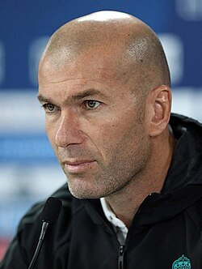
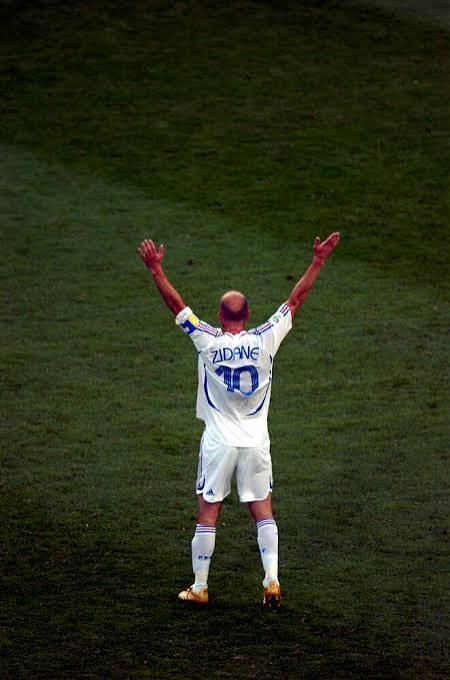

Portrait · Football
Zinédine
Zidane
De Marseille au sommet du football mondial, le parcours d’un meneur de jeu devenu entraîneur puis sélectionneur des Bleus.
Découvrir son parcours
Son parcours
Né le 23 juin 1972 à Marseille, Zinédine Zidane s’impose au poste de milieu offensif. En 1998, il inscrit deux buts de la tête en finale de la Coupe du monde face au Brésil. Il reçoit le Ballon d’or la même année, puis remporte l’Euro 2000 avec la France.
- 1998
Champion du monde avec les Bleus et lauréat du Ballon d’or.
- 2002
Vainqueur de la Ligue des champions avec le Real Madrid, grâce à sa volée décisive en finale.
- 2016–2018
Trois Ligues des champions consécutives comme entraîneur du Real Madrid.
- 2026
Prise de fonctions comme sélectionneur de l’équipe de France le 1er août.
En images



Pour aller plus loin
- Sa carrière en équipe de France · FFF
- Sa nomination à la tête des Bleus · FFF
- Zidane, une icône de mode · Marie Claire